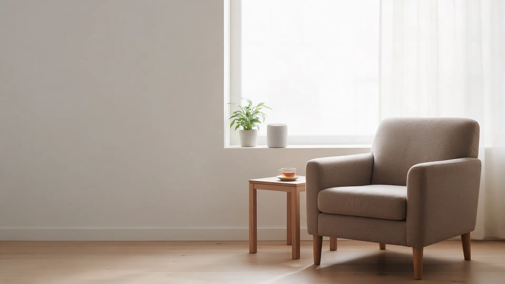
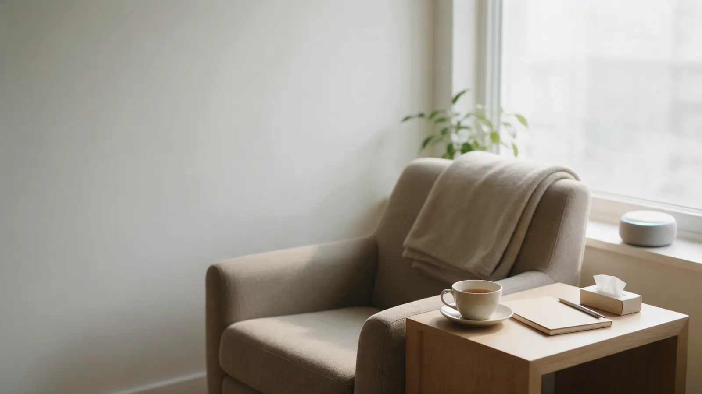
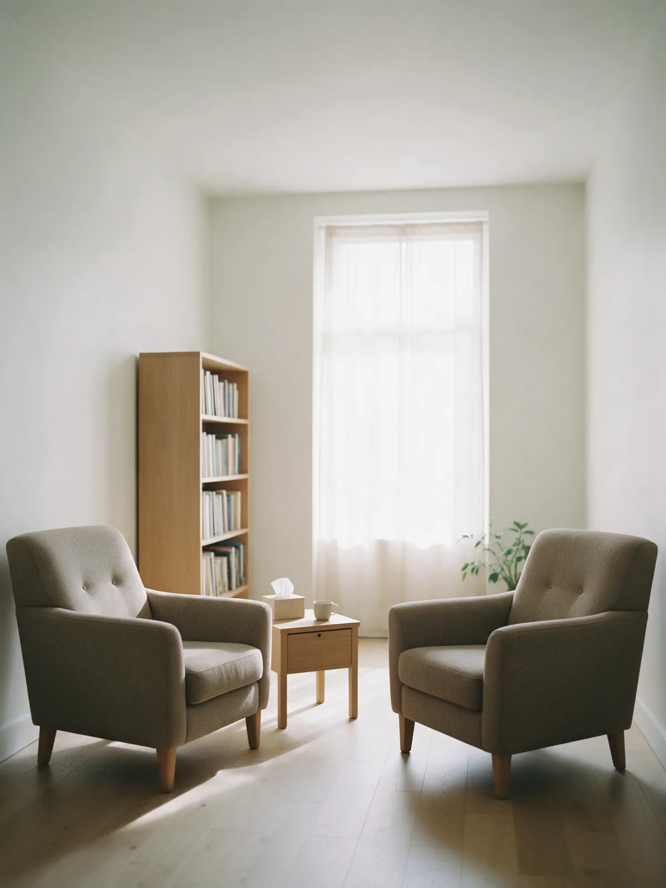
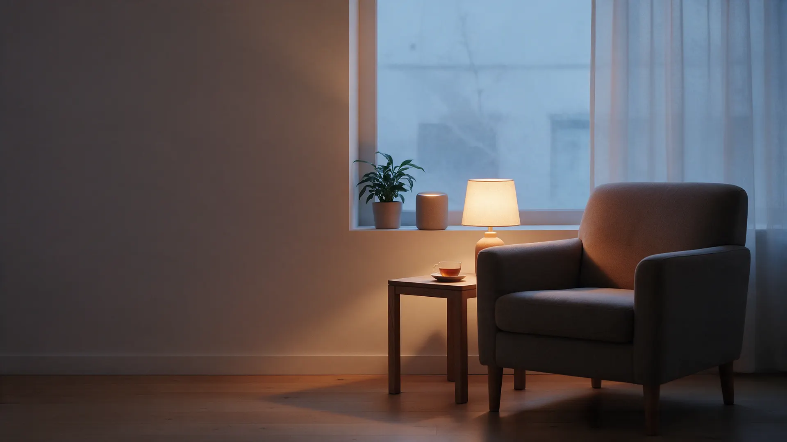

В частной практике работаю исключительно как психолог-консультант: без медицинских услуг, диагнозов и рецептов. Вопрос «зачем это» здесь нормальный, а не неудобный.


{{имя}} · психолог-консультант
Психолог, к которому не страшно прийти
Первая встреча – короткое знакомство: поймём запрос и договоримся о формате. Без медицинских услуг и диагнозов. Решение – за вами.
Пять вопросов, которые задают до первой встречи
Отвечаю на них здесь, пока вы дома, в своём темпе и без чужих глаз.
- 1Будет страшно?
- 2Что будет?
- 3Сколько стоит?
- 4Кто ведёт?
- 5Когда начать?
Форматы работы
С чем приходят и как это устроено
Взрослым, очно и онлайн. По каждому формату – понятные условия и стоимость до начала работы.
- Формат и стоимость письменно до начала
- Без медицинских услуг и диагнозов
- Тихий кабинет: музыка, окно, время вам
- Онлайн: MAX и Telegram, удобный часовой пояс
Индивидуальная консультация
Тревога, выгорание, трудные решения, отношения, жизненные перемены. Работаем с вашим запросом, в вашем темпе.
уточнить ₽Первая встреча-знакомство
Короткая встреча, чтобы понять запрос, задать мне вопросы и договориться о формате. Без обязательств продолжать.
уточнить ₽Регулярная работа
Встречи раз в неделю или две. Запрос, цели и ориентиры по времени фиксируем письменно после знакомства.
уточнить ₽Онлайн из любой страны
MAX для тех, кто в России, Telegram – для русскоязычных за границей. Время подбираем под ваш часовой пояс.
уточнить ₽
Не знаете, с чего начать? Напишите, что беспокоит, – на встрече-знакомстве подберём формат и я честно скажу, чем могу помочь, а чем нет.
Написать в MAX
Вопрос 1 · Будет страшно?
Откладывать бывает страшнее, чем прийти
Страх перед первой встречей – это нормально. Страшно обычно от неизвестности, поэтому показываю всё заранее: что будет, сколько стоит и как это устроено.
- Сейчас
«Справлюсь сама, это ещё не так плохо»
Тревога на фоне, сон хуже, сил меньше. Знакомая история, которую кажется, что можно перетерпеть.
- Через месяцы
«Уже мешает жить»
Раздражительность близким, прокрастинация, «зависания». На работе и в отношениях всё чаще срывается то, что раньше держалось.
- Потом
«Я вообще не справляюсь»
Избегание, одиночество, ощущение, что «выдышалась». Теперь страшно не только прийти, но и признать, что помощь нужна.
Поэтому
Начинаем с малого: короткое знакомство в переписке или на видео. Вы рассказываете, что беспокоит, я отвечаю на вопросы. Никаких оценок, давления и «а вам надо просто взять себя в руки».
Это формат консультирования, а не медицинская помощь. Если запрос окажется вне моей компетенции, честно скажу и подскажу, куда обратиться.
Вопрос 2 · Что будет?
Первая встреча – знакомство, а не допрос
Пять шагов, и после каждого вы понимаете, что происходит. Можно остановиться на любом: давить не буду.
Шаг 1Сообщение
Пишете в MAX или Telegram пару слов о том, что беспокоит. Отвечаю сама, без шаблонов и автоответчиков.
Шаг 2Знакомство
Короткая встреча: вы рассказываете, я отвечаю на вопросы. Смотрим, комфортно ли нам друг с другом.
Шаг 3Запрос
Вместе формулируем, с чем работаем. Если запрос не мой, честно говорю и подсказываю, к кому лучше.
Шаг 4Формат
Договариваемся о времени, частоте и стоимости. Письменно: сообщением, чтобы было от чего оттолкнуться.
Шаг 5Решение
Начинаем, только если вам спокойно и понятно. Можно подумать и ответить потом.
Написать в MAX
Первый шаг – просто сообщение. Напишите, что беспокоит, и договоримся о времени знакомства.
Вопрос 3 · Сколько стоит?
Стоимость называю до начала
Никаких «разберёмся по ходу». Формат, частота и цена фиксируются письменно до первой оплаты.
Встреча-знакомство уточнить ₽
Короткая встреча: понять запрос, ответить на вопросы, договориться о формате.
На маршруте: шаг 1Индивидуальная консультация уточнить ₽
Работа с вашим запросом в удобном формате – очно в кабинете или онлайн.
На маршруте: шаг 2Регулярная работа уточнить ₽
Встречи по расписанию, цели и ориентиры по времени – письменно. Стоимость обсуждаем до старта.
На маршруте: шаг 3Онлайн из любой страны уточнить ₽
MAX для России, Telegram для русскоязычных за границей. Время – под ваш часовой пояс.
На маршруте: шаг 4Итоговая сумма вся работа
Фиксируется письменно до начала и не меняется по ходу. Если формат меняется – сначала договариваемся заново.
На маршруте: весь путьЗнакомствоВесь маршрутРегулярная работа
Вопрос 4 · Кто ведёт?
Специалист, с которым можно не притворяться
Образование и опыт – только те, что подтверждены документами. Никаких «лучших в городе» и выдуманного стажа.
Чем консультация отличается от приёма врача
- Без медицинских услугНе ставлю диагнозы и не назначаю лекарства. Это психологическое консультирование, а не лечение
- КонфиденциальноВсё, что вы рассказываете на встречах, остаётся между нами
- В вашем темпеМожно помолчать, можно остановиться. Никакого давления и дедлайнов «выздороветь»
- Договорённости письменноФормат, время и стоимость фиксирую сообщением до начала работы

Вопрос 5 · Когда начать?
Начните с сообщения
Напишите в MAX или Telegram: отвечу сама, подберём время для знакомства. Для русскоязычных за границей – удобный часовой пояс.